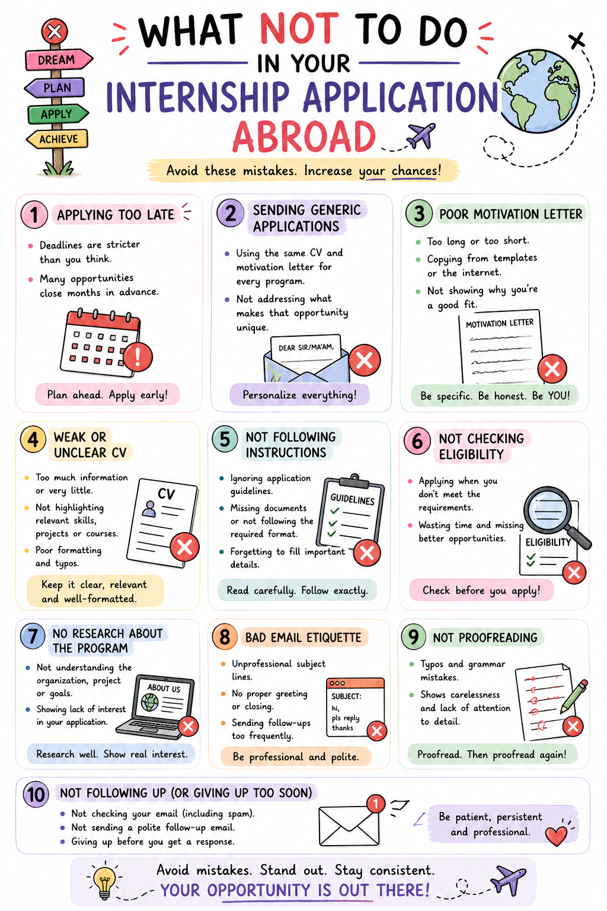
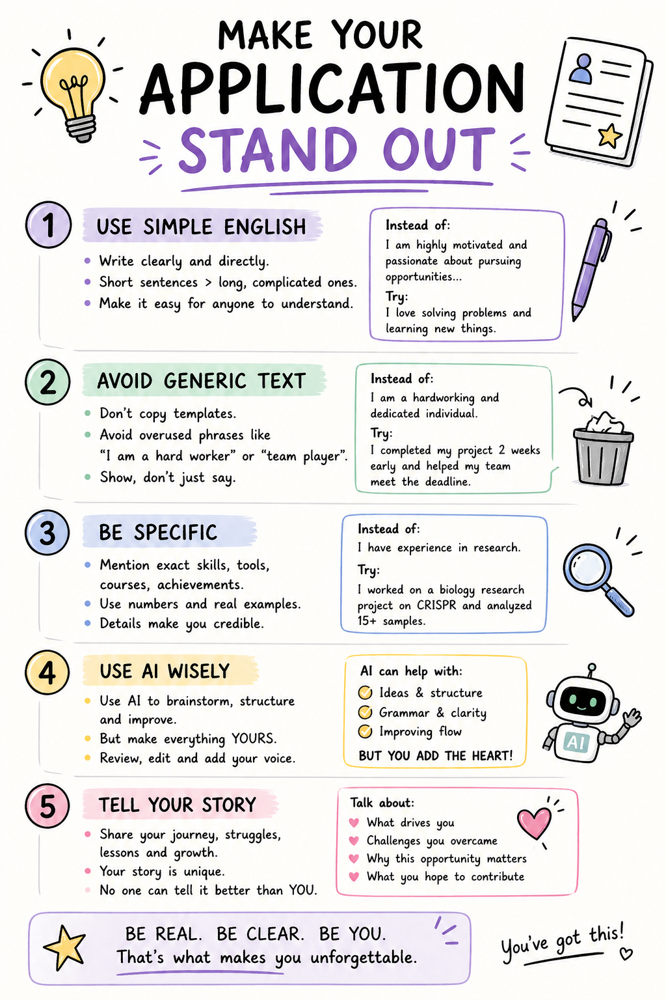

Essential Application Documents
Click on any guide below to view the full image and learn how to prepare a strong application.
📄 Dos and Don'ts / Resume

A step-by-step guide to writing a competitive academic CV for internships and research opportunities.
✍ Motivation Letter

Learn how to write a compelling motivation letter that clearly communicates your goals and strengths.
📝 Recommendation Letter

Tips on requesting strong recommendation letters from supervisors and professors.
🎯 Statement of Purpose

Understand how to explain your academic journey, ambitions, and why you're the right fit.
timeline

Learn how to write professional emails that increase your chances of receiving positive responses.